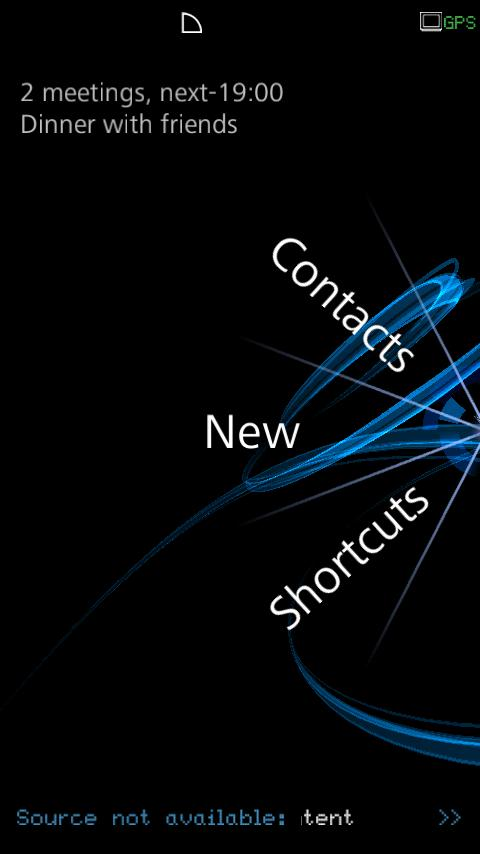

{kind=link}
{kind=link}
{kind=link}
{kind=link}

{kind=link}
{kind=link}
Click for full device resolution.
Force is a UI refresh for ALP 3.0 based on OpenGL, Clutter, and GObject.
Force replaces the X11-based graphics and server we used in ALP 2.4 with much prettier, faster, more versatile OpenGL graphics. The plan, especially for the initial device, was to make a very pretty interface that "breathed". In practical terms, that means lots of shaders, images and background animations running constantly. Overall, we succeeded.
Images from the Idle Screen app on the device

Click for full device resolution.
The blue ribbon slowly moves as the device runs.
A lot of design decisions go into a server redesign. I'll visit a few at a high level here.
Images from apps on the device
Click for full device resolution.
The X11 protocol is basically a windowing and drawing protocol. Our aim for Force was to avoid this as much as possible. We separated each widget into semantic components called controls which would communicate over IPC, and visual components called actors that existed entirely within the Force server. For instance, a button's control might have the display text, and send an action when the button is pushed so that the application can respond. But the button's placement, color, font and display animation exist only on the server side. The button can be displayed in a different screen resolution or theme without the app needing to be notified at all. This allows very quick response among overlaid applications with very little IPC, and encourages general and reusable app design. It also requires a very strict separation between visual code and UI code.
Because display logic is separate, the device can rotate without having
to notify the app. Force switches between two different layout
files transparently and immediately.
These are two different views of the same screen of the same app.
Physically rotating the device will switch between them, but the app
isn't even notified. It just sees control signals, and both views use
the same control objects.
A small but important feature of the server-does-display decision was that overlaying multiple windows with transparency became easy. This had not been true under our GTK model.
Here, the media player app displays over the menu
We were trying to switch from a standard, desktop-style process model to something more appropriate to the devices we targeted. The Force activity model was a good compromise between innovation and backward compatibility, as well as ease of porting Linux applications.
Fundamentally, each app consisted of only one standard Linux process. However, that process might host a number of different forms and activities. For instance, imagine a case where the user starts in the Calendar, taps a contact and goes to Contacts, and then taps the default profile picture to go to Camera. At that point, a phone call comes in. From the Phone app, the user selects "add contact". Now Contacts is running in two different roles (see below).
Chain 1: Calendar -> Contacts (1) -> Camera
Chain 2: Phone -> Contacts (2)
In this case, there is only a single Linux process for Contacts, and only a single event loop. However, there are two sets of structures for the two different activities, and there may be several forms in each activity. Because of the way we designed our event API, this works out very neatly, and even still uses the GObject main loop.
Applications are shared libraries, as is standard for ALP. The primary difference is that apps now link with the (very small) app-side Force library instead of GTK, and supply JSON files called CDF and SDF files instead of GTK's Glade files. The CDF describes controls and app callbacks, while the SDF maps those controls to actors and visual properties.
A primary concern of Force is to allow an application to connect its controls (widgets, basically) to very visually different applications with no change to the application. Therefore, the images below represent both a simplified presentation layer for basic application bringup, and a more complex set of actors which require extensive OpenGL shader support. It's important to realize that the set of actors can be traded out with a run-time option -- the application sends and receives signals over a socket to the server, and the server translates those signals into vastly different runtime displays.
An early version of the calculator application, with two different sets
of actors:

The same app runs either one, with two different resource files to
specify the visual details. Here is the Contacts app in each set of
actors:
We had an in-framework facility for animations, but it basically wasn't used by the actual on-hardware release. They went straight to Clutter's low-level animation facilities. This had some hiccups here and there, but basically worked fine.
The menu app, which uses ClutterTimeline for animations:
Another neat property of our server architecture was the ability to run an application inside a section of another application's form. This is somewhat similar to facilities like Windows OLE, and our "multiple activities, one Linux process" model made it a good fit for many of the resource management strategies we used in our applications.
While Force was written by a large team, I was one of the initial team of four designers. Of the four, one was less involved and left the company several months later, and one was primarily an application API architect rather than a server architect. Thus, I was one of two primary server architects and implementors. This architecture represents a lot of work and design specifically done by me.
I worked primarily on the central server code. I also wrote some, and debugged a lot, of the server-side actor and control code. And other work as needed, as you'd expect.
Force was the name of the internal ACCESS-specific framework we designed, which is part of ALP 3.0. There was a separate, concurrent project to build a device using this framework on hardware also used for another project, which wasn't released.
We wrote both actor sets so that we could do early testing before we had full OpenGL implementations of actors. The simplified actors also worked better on the simulator, which had only software OpenGL, and couldn't accept shaders. Initially simplified actors were to act as examples to the programmers writing the final shaders, and to be expanded from, but they wound up being maintained for use with the simulator and to check the scope of particular bugs.
Conveniently, the simplified actors are an example of Force running in a different theme. Other examples, on other real hardware, are likely to happen eventually but none are yet announced.
The same hardware, running ALP 2.4

{kind=link}
{kind=link}
{kind=link}
{kind=link}
{kind=link}
{kind=link}
{kind=link}
{kind=link}
{kind=link}